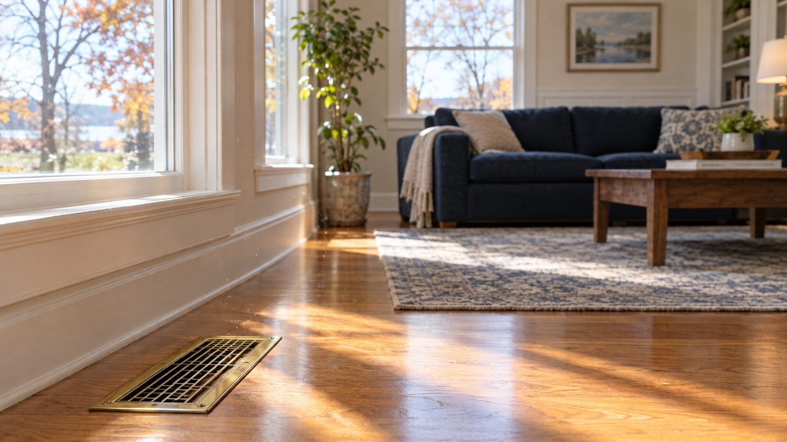

Service · Madison, WI
Find out what is in your air first.
Pollutant assessment, mycotoxin testing, humidity and environmental testing. Nick tests and reports what the results show, then recommends only what the results support.

Why test before cleaning
A growing body of evidence indicates the air inside buildings can be more polluted than outdoor air. But the right response depends on what is actually there: particulate from a renovation calls for a different fix than hidden moisture feeding mold in a return. Testing first means you spend money on the thing that is actually wrong.
What can be assessed
- Mold and mycotoxin presence in air and on surfaces
- Particulate matter and dust load in the system
- Volatile organic compounds (VOCs) from materials and products
- Humidity and conditions that support bio-growth
- Odor sources in ductwork and HVAC components
What you get
A plain-English report of what was found and where, with recommendations limited to what the results support: sometimes a cleaning, sometimes a moisture fix, sometimes nothing at all. Nick is an indoor air specialist, not a medical provider; he does not diagnose or treat health conditions.
Written by someone who studies this
Nick Bellino is the author of five books on mold, mycotoxins and indoor air quality and of a doctoral-level literature review on the economics of residential mold contamination. See the books.
Questions
About this service
Can you test for mold or mycotoxins before cleaning?
Yes. Indoor air quality services include pollutant assessment, mycotoxin testing, humidity assessment and environmental testing. Nick tests and reports what the results show; he does not diagnose or treat health conditions.
Do my air ducts actually need cleaning?
Not always, and we will tell you if they don't. The EPA says duct cleaning is reasonable when there is visible mold growth inside ducts or on HVAC components, when ducts are infested with vermin, or when they are clogged with excessive dust and debris that is released into the home. Every job starts with a free inspection so you can see what is in the system before deciding.
Does duct cleaning improve indoor air quality?
It can when the ducts themselves are a source: visible mold, vermin, or heavy debris being released into the home. The EPA has not found that routine duct cleaning prevents health problems, which is exactly why Ducts On Call inspects and tests before recommending it.